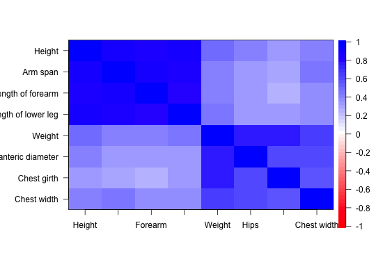

A classic data set from Harman (1976) reporting the correlations of eight physical variables. Used by Harman for demonstrations of factor analysis (both principal axis and minimum residual).
data(Harman.8)
The format is: num [1:8, 1:8] 1 0.846 0.805 0.859 0.473 0.398 0.301 0.382 0.846 1 ... - attr(*, "dimnames")=List of 2 ..$ : chr [1:8] "Height" "Arm span" "Length of forearm" "Length of lower leg" ... ..$ : chr [1:8] "V1" "V2" "V3" "V4" ...
The Eight Physical Variables problem is taken from Harman (1976) and represents the correlations between eight physical variables for 305 girls. The two correlated clusters represent four measures of "lankiness" and then four measures of "stockiness". The original data were selected from 17 variables reported in an unpublished dissertation by Mullen (1939).
Variable 6 ("Bitrochanteric diamter") is the distance between the outer points of the hips.
The row names match the original Harman paper, the column names have been abbreviated.
The fa solution for principal axes (fm="pa") matches the reported minres solution, while the fm="minres" does not.
For those interested in teaching examples using various body measurements, see the body data set in the gclus package.
There are several other Harman examples in the psych package as well as in the dataseta and and GPArotation packages. The Harman 24 mental tests problem is in the basic datasets package at Harman74.cor.
H. Harman and W.Jones. (1966) Factor analysis by minimizing residuals (minres). Psychometrika, 31(3):351-368.
Harman, Harry Horace (1976) Modern factor analysis, 3d ed., rev, University of Chicago Press. Chicago.
Harman, Harry Horace and Jones, W. (1966) Factor analysis by minimizing residuals (minres). Psychometrika, 31(3):351-368.
Harman, Harman.political and Harman74.cor
#> Factor Analysis using method = minres #> Call: fa(r = Harman.8, nfactors = 2, rotate = "none") #> Standardized loadings (pattern matrix) based upon correlation matrix #> MR1 MR2 h2 u2 com #> Height 0.86 -0.32 0.84 0.16 1.3 #> Arm span 0.85 -0.41 0.89 0.11 1.4 #> Forearm 0.81 -0.41 0.82 0.18 1.5 #> Leg length 0.83 -0.34 0.81 0.19 1.3 #> Weight 0.75 0.57 0.89 0.11 1.9 #> Hips 0.63 0.49 0.64 0.36 1.9 #> Chest girth 0.57 0.51 0.58 0.42 2.0 #> Chest width 0.61 0.35 0.49 0.51 1.6 #> #> MR1 MR2 #> SS loadings 4.45 1.51 #> Proportion Var 0.56 0.19 #> Cumulative Var 0.56 0.74 #> Proportion Explained 0.75 0.25 #> Cumulative Proportion 0.75 1.00 #> #> Mean item complexity = 1.6 #> Test of the hypothesis that 2 factors are sufficient. #> #> The degrees of freedom for the null model are 28 and the objective function was 6.94 #> The degrees of freedom for the model are 13 and the objective function was 0.26 #> #> The root mean square of the residuals (RMSR) is 0.02 #> The df corrected root mean square of the residuals is 0.03 #> #> Fit based upon off diagonal values = 1 #> Measures of factor score adequacy #> MR1 MR2 #> Correlation of scores with factors 0.98 0.94 #> Multiple R square of scores with factors 0.96 0.89 #> Minimum correlation of possible factor scores 0.93 0.78#> Factor Analysis using method = pa #> Call: fa(r = Harman.8, nfactors = 2, rotate = "none", fm = "pa") #> Standardized loadings (pattern matrix) based upon correlation matrix #> PA1 PA2 h2 u2 com #> Height 0.86 -0.32 0.84 0.16 1.3 #> Arm span 0.85 -0.41 0.89 0.11 1.4 #> Forearm 0.81 -0.41 0.82 0.18 1.5 #> Leg length 0.83 -0.34 0.81 0.19 1.3 #> Weight 0.75 0.57 0.89 0.11 1.9 #> Hips 0.63 0.49 0.64 0.36 1.9 #> Chest girth 0.57 0.51 0.58 0.42 2.0 #> Chest width 0.61 0.35 0.49 0.51 1.6 #> #> PA1 PA2 #> SS loadings 4.45 1.51 #> Proportion Var 0.56 0.19 #> Cumulative Var 0.56 0.74 #> Proportion Explained 0.75 0.25 #> Cumulative Proportion 0.75 1.00 #> #> Mean item complexity = 1.6 #> Test of the hypothesis that 2 factors are sufficient. #> #> The degrees of freedom for the null model are 28 and the objective function was 6.94 #> The degrees of freedom for the model are 13 and the objective function was 0.26 #> #> The root mean square of the residuals (RMSR) is 0.02 #> The df corrected root mean square of the residuals is 0.03 #> #> Fit based upon off diagonal values = 1 #> Measures of factor score adequacy #> PA1 PA2 #> Correlation of scores with factors 0.98 0.94 #> Multiple R square of scores with factors 0.96 0.89 #> Minimum correlation of possible factor scores 0.93 0.77